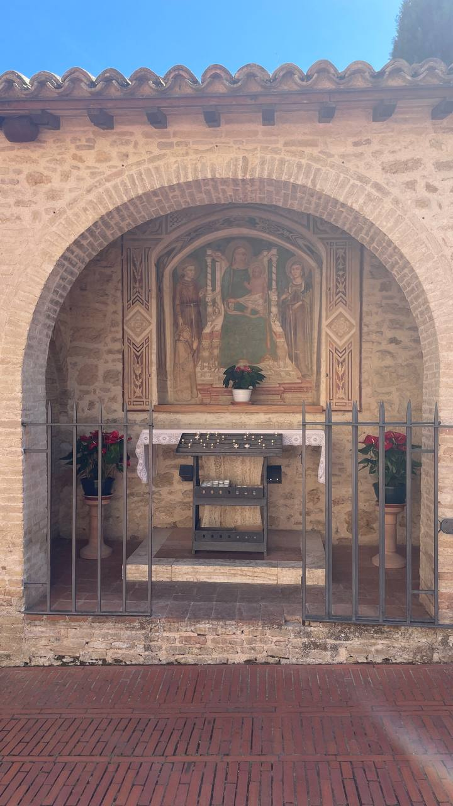
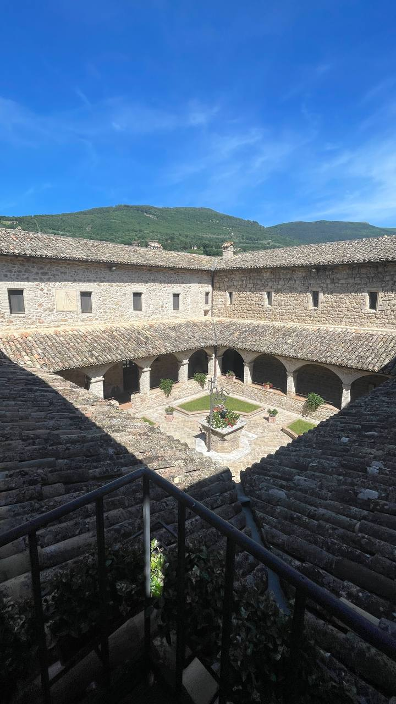
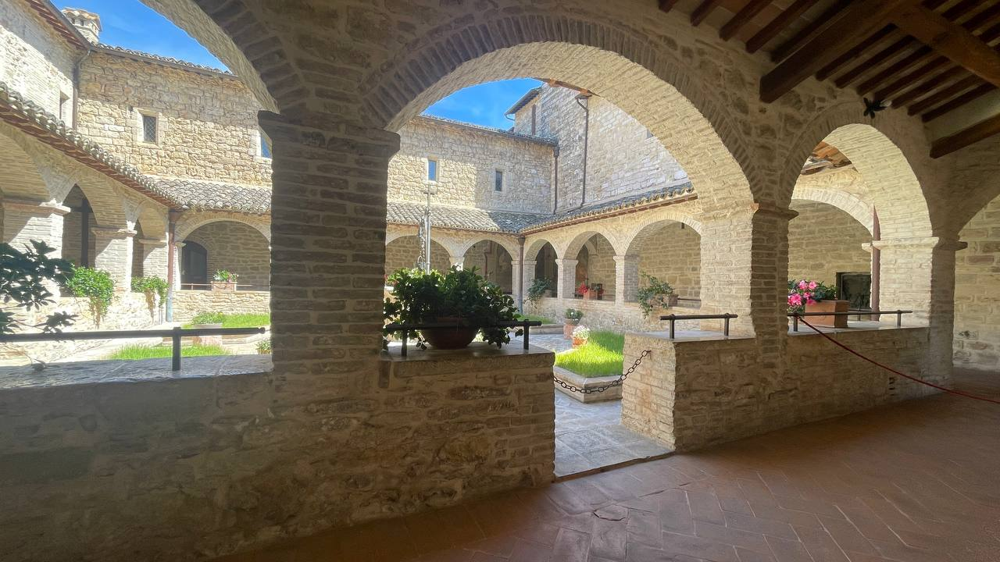
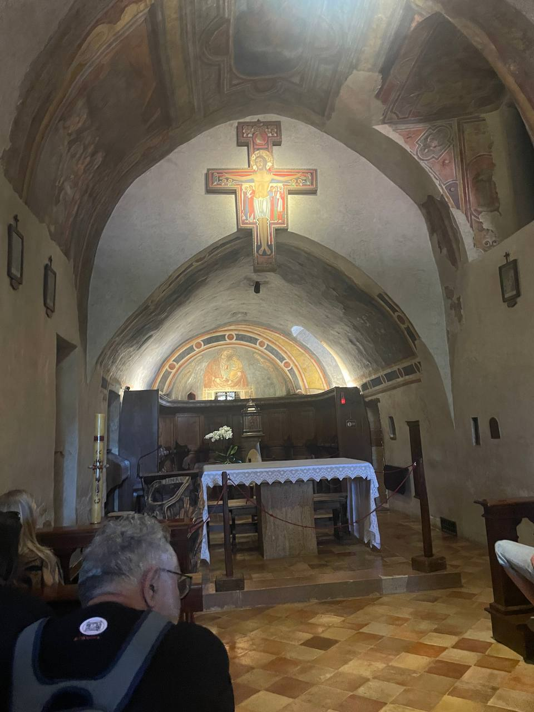
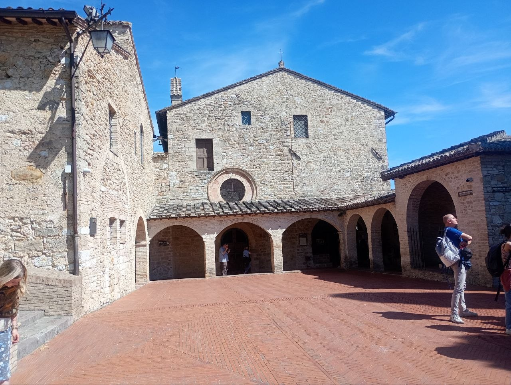
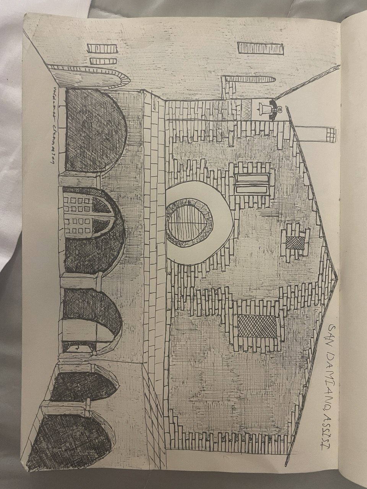
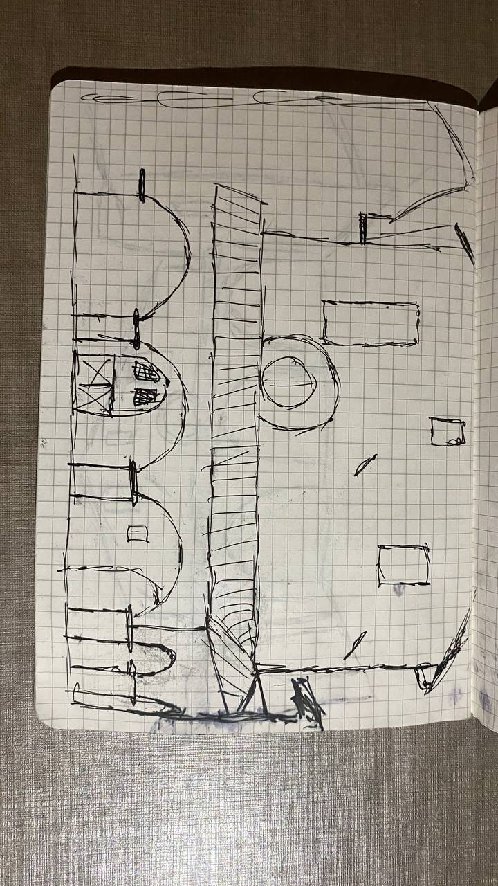
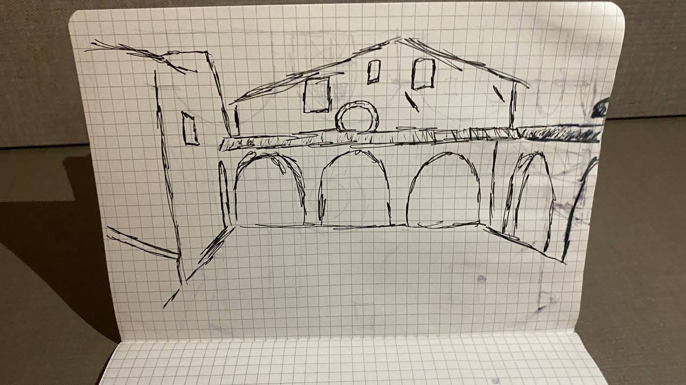

Assisi var præget af fattigdom i 1200 tallet, hvor Frans begyndte at kæmpe imod denne fattigdom ved at hjælpe dem i nød, og forlod endda sit liv i rigdom for at bygge kirken ved navn San Damiano. Kirken blev genopbygget af Frans efter en besked fra Gud, og blev brugt til at hjemme de fattige og skabte Franciskanerordenen, med målet om at genskabe sit liv med ydmyghed og fattigdom på den samme måde som Jesus levede. Denne kirke står nu stadig idag.





Vi lavede derefter tegninger af kirkens yderside


